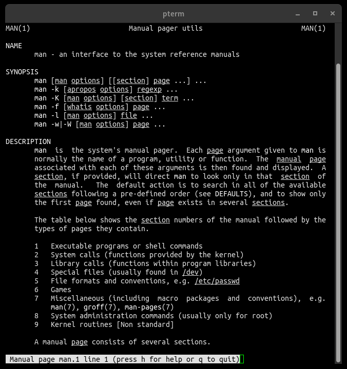

man-db is an implementation of the standard Unix documentation
system accessed using the man command. It uses a Berkeley DB
database in place of the traditional flat-text whatis databases.
man-db is used by several popular GNU/Linux distributions,
including:
It also compiles and runs on a number of proprietary Unix systems.
For macOS, you can install man-db using
Homebrew with
this "tap", or
using MacPorts with
sudo port install man-db.
The GitLab repository for man-db is updated with new releases reasonably frequently.
See the development page for advice on how to get involved with development.
